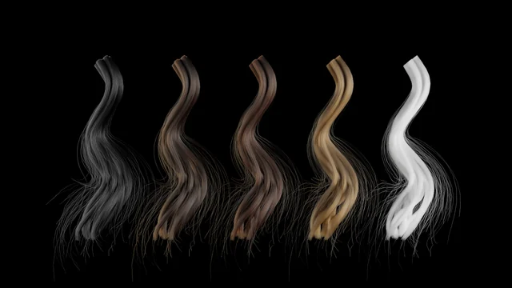
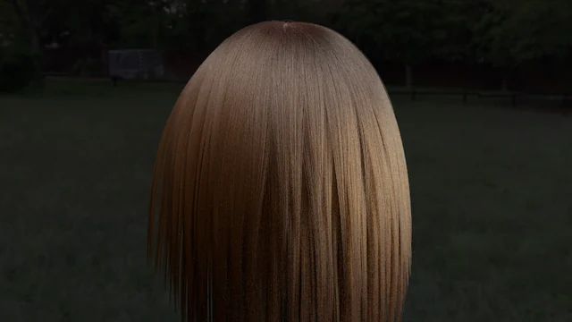

Gallery
Rendered images
Images rendered with my homemade 3D renderer GoLD_rayt, plus examples of model loading. Click an image to enlarge it.
Spectral rendering: computing color by wavelength
The same scenes rendered with an RGB approximation, for comparison.
 A gold statue, RGB vs. spectral
A gold statue, RGB vs. spectral
 Spectral mode overview
Spectral mode overview
 How object colors change when the light changes
How object colors change when the light changes
How light travels: interference, caustics, translucency
Interference in a thin film, patterns formed by refracted light, and light scattering inside objects.
 Soap bubble: thin-film interference
Soap bubble: thin-film interference
 A diamond ring
A diamond ring
 The pattern of light through a prism
The pattern of light through a prism
 The same statue as wax, marble and jade
The same statue as wax, marble and jade
Tracing light from the source: rainbows in fog and the sparkle of a gem
Rendered with bidirectional path tracing (prototype), which follows light paths from the light source and connects them to the camera.


Surface appearance: water, coats, machining marks, hair
Sun glitter set by the slopes of waves, gloss from a clear coat over a base, metal reflections that change with the direction of the grooves, and hair drawn fiber by fiber.
 The sea at low sun
The sea at low sun
 A grid of gloss: roughness and base brightness
A grid of gloss: roughness and base brightness
 Lacquered gold
Lacquered gold
 Brushed gold: anisotropic reflection
Brushed gold: anisotropic reflection
 A gold bowl turned on a lathe
A gold bowl turned on a lathe

Hair color from melanin alone
Hair falling over a headSkin and model loading
Examples of loading a PMX model and trying out poses, expressions and skin scattering.


The character models are shown for personal technical verification and self-introduction, in accordance with their terms of use (no redistribution or commercial use). This is not for profit, and the site is not monetized. The models themselves are not distributed. Credits are shown when you enlarge an image.